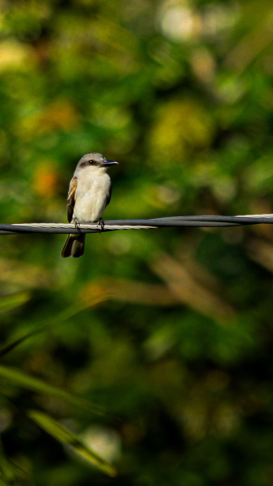

Photographer · Jamaica
Faith. Focus.
A wider view.
I’m Daren Bryan — a Christian, third-year AI student at UTech, and aspiring pilot and engineer. For 3–5 years, photography has helped me hold on to the places, people, and milestones that matter.
Explore my photographs 01 / 123
Graduation 2025
Faith · curiosity · a love of the view
01 / 123
Graduation 2025
Faith · curiosity · a love of the view
Collected over the years
My photographs.
Choose a collection and take a closer look.
No photographs in this collection yet.
A little more of the story, each time you look.

Jamaica, through my lens.Behind the camera
Rooted in faith.
Driven by wonder.
Always learning.
I’m Daren Bryan, a Christian and third-year Artificial Intelligence student at the University of Technology, Jamaica. I’m also an aspiring pilot, photographer, and engineer—drawn to both the details in front of the lens and the possibilities beyond it.
I’ve been photographing for about 3–5 years, from landscapes and travel to graduation portraits, food, and the moments in between. This portfolio is a growing record of what I notice and what I’m still learning to see.
Based in Jamaica · Photographer for 3–5 years
Browse the collectionsEvery photograph has a story
Milestones, places,
and everything between.
Graduations · Portraits · Landscapes · Travel · Food